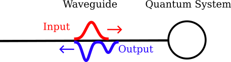
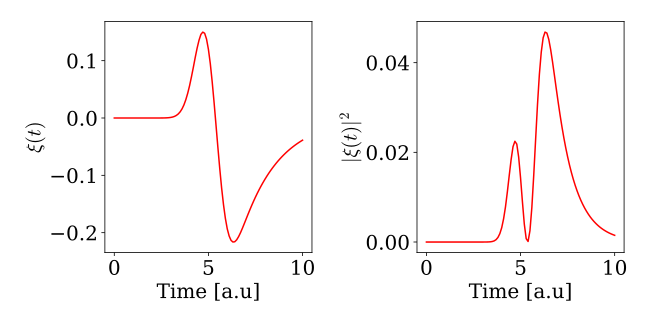
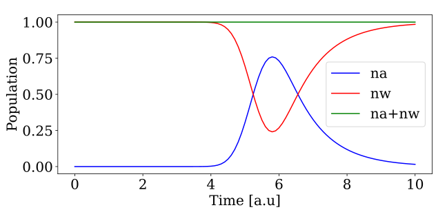
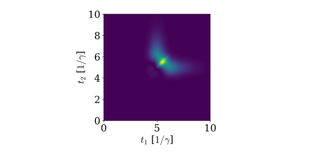
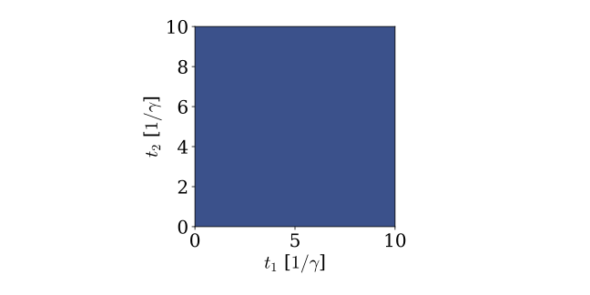

Tutorials
In this section, we show simple examples that illustrate how to use WaveguideQED.jl in combination with QuantumOptics.jl
Combining with QuantumOptics.jl
Basises, states, and operators defined in WaveguideQED.jl can be effortlessly combined with operators from QuantumOptics.jl. As an example, we are going to consider a waveguide with a single photon pulse impinging on an empty onesided cavity. A sketch of the system can be seen here:

We start by defining the basis of the cavity and waveguide:
using WaveguideQED
using QuantumOptics
times = 0:0.1:10
bw = WaveguideBasis(1,times)
bc = FockBasis(1)Next, we want to create the Hamiltonian for the system. The interaction between the waveguide and cavity is at timestep k given by[1] $H_k = i \hbar \sqrt{\gamma / \Delta t}( a^\dagger w_k - a w_k^\dagger)$, where $a$ ($a^\dagger$) is the cavity annihilation (creation) operator, $w_k$($w_k^\dagger$) is the waveguide annihilation (creation) operator, $\gamma$ is the leakage rate of the cavity, and $\Delta t = \mathrm{times[2]}-\mathrm{times[1]}$ is the width of the time-bin. WaveguideQED.jl follows the same syntax as QuantumOptics.jl, and operators are defined from a basis. Operators of different Hilbert spaces are then combined using ⊗ (\otimes) or tensor:
a = destroy(bc)
ad = create(bc)
w = destroy(bw)
wd = create(bw)
dt = times[2] - times[1]
γ = 1
H = im*sqrt(γ/dt)*( ad ⊗ w - a ⊗ wd )With this, we can now simulate the scattering of a single photon with a Gaussian wavefunction scattered on a cavity. We define the initial state as waveguide state as:
ξ(t,σ,t0) = sqrt(2/σ)* (log(2)/pi)^(1/4)*exp(-2*log(2)*(t-t0)^2/σ^2)
σ,t0 = 1,5
ψ_waveguide = onephoton(bw,ξ,σ,t0)Note that the wavefunction $\xi(t)$ is assumed to be normalized: $\int_0^\infty \xi(t) dt = 1$ when creating waveguide states. If one wants to use a non-normalized function, the keyword norm=true can be passed to onephoton to ensure normalization.
Considering an initially empty cavity, the combined initial state is then:
ψ_in = fockstate(bc,0) ⊗ ψ_waveguideWith the initial state, we can then call the solver the get the wavefunction after the interaction with the cavity.
ψ_out = waveguide_evolution(times,ψ_in,H)Plotting the wavefunction and its norm square gives:
using PyPlot
viewed_state = OnePhotonView(ψ_out)
fig,ax = subplots(1,2,figsize=(9,4.5))
ax[1].plot(times,real.(viewed_state),"r-",label="Real part")
ax[1].set_xlabel("Time [a.u]")
ax[1].set_ylabel(L"$\xi(t)$")
ax[2].plot(times,abs.(viewed_state).^2,"r-")
ax[2].set_xlabel("Time [a.u]")
ax[2].set_ylabel(L"$|\xi(t)|^2$")
We see that the wavefunction has changed after the interaction with the cavity. More specifically, we see how the pulse gets absorbed into the cavity leading to a phase change in the wavefunction. This phase change also leads to destructive interference between the photon being emitted from the cavity and the reflection of the incoming photon. This leads to a dip in the photon wavefunction after the interaction.
Expectation values
In the previous example, only the state at the final timestep was shown. This shows the output wavefunction, but one might also be interested in intermediate states or expectation values. Expectation values can be outputted from the solver by using the fout keyword. As an example, we can get the number of photons in the cavity as a function of time by:
n = (ad*a) ⊗ identityoperator(bw)
function exp_na(time,psi)
expect(n,psi)
end
ψ_out,na = waveguide_evolution(times,ψ_in,H,fout=exp_na)If we also want to know the number of photons in the waveguide state as a function of time, another operator to out expectation function as:
n = (ad*a) ⊗ identityoperator(bw)
n_w = identityoperator(bc) ⊗ (create(bw)*destroy(bw))
function exp_na_and_nw(time,psi)
(expect(n,psi),expect_waveguide(n_w,psi))
end
ψ_out,na,nw = waveguide_evolution(times,ψ_in,H,fout=exp_na_and_nw)Where expect_waveguide(n_w,psi) calculates the expectation value of all times of the pulse at each timestep: $\mathrm{expect\_waveguide(n_w,psi)} = \bra{\psi} \sum_k I \otimes w_k^\dagger w_k \ket{\psi}$
This can be plotted as:
fig,ax = subplots(1,1,figsize=(9,4.5))
ax.plot(times,real.(na),"b-",label="na")
ax.plot(times,real.(nw),"r-",label="nw")
ax.plot(times,real.(nw+na),"g-",label="na+nw")
ax.set_xlabel("Time [a.u]")
ax.set_ylabel("Population")
ax.legend()
plt.tight_layout()
Here we see how the photon wavepacket is partially absorbed into the cavity and then reemitted again.
If we plot the wavefunction as a function of time (and do some displacing), we can even animate the process:

Multiple Photons (2-photon states)
In the above, we considered a single-photon state scattering on the cavity. If we instead want to consider more photons, we have to create a basis that allows for more photons. Currently, the maximum number of photons is two. We thus create a waveguide basis with a maximum of two photons with:
times = 0:0.1:10
bw = WaveguideBasis(2,times)
bc = FockBasis(1)The Hamiltonian is still the same:
w_twophoton = destroy(bw)
wd_twophoton = create(bw)
H_twophoton = im*sqrt(γ/dt)*( ad ⊗ w_twophoton - a ⊗ wd_twophoton )If we want an initial two-photon state, we instead use the function twophoton to create a two-photon state $\frac{1}{\sqrt{2}}\left[W^\dagger(\xi)\right]^2|0\rangle = \frac{1}{\sqrt{2}} \int_{t_0}^{t_{end}} d t^{\prime} \int_{t_0}^{t_{end}} d t \ \xi^{(2)}(t,t') w^\dagger(t) w^\dagger\left(t^{\prime}\right)|0\rangle $ (see [Theory](@ref theory) for details). In the following, we define the two-photon wavefunction $\xi^{(2)}(t,t') = \xi^{(1)}(t)\xi^{(1)}(t')$ which is thus a product state of two single-photons.
ξ2(t1,t2,σ,t0) = ξ(t1,σ,t0)*ξ(t2,σ,t0)
σ,t0 = 1,5
ψ_twophoton = 1/sqrt(2)*twophoton(bw,ξ2,σ,t0)
ψ_in_twophoton = fockstate(bc,0) ⊗ ψ_twophotonNotice the structure of ξ2(t1,t2,σ,t0), it now has two time-arguments and the remaining arguments are parameters. If we wanted to allow for two different widths of the single-photon states in the product state, we could have also defined: ξ2(t1,t2,σ1,σ2,t0) = ξ(t1,σ1,t0)*ξ(t2,σ2,t0). Another important detail is the normalization. twophoton only creates $\int_{t_0}^{t_{end}} d t^{\prime} \int_{t_0}^{t_{end}} d t \ \xi^{(2)}(t,t') w^\dagger(t) w^\dagger \left( t^{\prime} \right) | 0 \rangle$ and we thus need the factor of $1/\sqrt{2}$ for the state to be normalized.
In the following, we consider the more simple case of equivalent photons. We solve the two-photon scattering in the following.
ψ_out = waveguide_evolution(times,ψ_in_twophoton,H_twophoton)The resulting scattered two-photon state can be retrieved with the TwoPhotonView structure.
ψ_out_twophoton = TwoPhotonView(ψ_out)We can plot the two-photon state easily with:
fig,ax = subplots(1,1,figsize=(9,4.5))
plot_twophoton!(ax,ψ_out_twophoton,times)
ax.set_xlabel(L"$t_1$ [$1/\gamma$]")
ax.set_ylabel(L"$t_2$ [$1/\gamma$]")
Note that per default, the view structures (OnePhotonView and TwoPhotonView) pick out the groundstate of all the other bases, which in this case means that we are viewing the state $\ket{\psi} = \ket{0} \otimes \sum_k \sum_j \xi^{(2)}(t,t') \Delta t w_k^\dagger w_j^\dagger \ket{\emptyset}$. If instead, we wanted to view $\ket{\psi} = \ket{1} \otimes \sum_k \sum_j \xi^{(2)}(t,t') \Delta t w_k^\dagger w_j^\dagger \ket{\emptyset}$, we can give and extra indexing argument. In this case, the first basis belongs to the cavity and the state $\ket{1}$ has the index $2$, while the second basis is the waveguide basis and we here want the whole state so we give the index ":". We thus have:
ψ_out_twophoton_upper = TwoPhotonView(ψ_out,[2,:])Since all photons have leaked out of the cavity at the end of the simulation, this state is almost unoccupied which we can see by:
println(norm(ψ_out_twophoton_upper)^2)0.0and if we plot it, we also get nothing:
fig,ax = subplots(1,1,figsize=(9,4.5))
plot_twophoton!(ax,ψ_out_twophoton_upper,times)
ax.set_xlabel(L"$t_1$ [$1/\gamma$]")
ax.set_ylabel(L"$t_2$ [$1/\gamma$]")